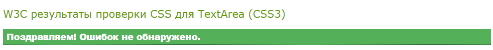

Файловая структура проекта
Для лучшей поддержки кода проекта необходима понятная и очевидная файловая структура, необходимо логически разделять файлы которые используются в веб-странице.
Понятная структура проекта обеспечивает легкость поддержки и масштабирования.
Лучшие практики формирования файловой структуры проекта:
- Все файлы посвященные проекту должны размещаться в папке с названием проекта.
- Общее правило — по возможности все файлы одного типа группировать в папку.
- Все CSS-файлы со стилями рекомендуется размещать в папке css, основной CSS-файл рекомендуется называть main.css, styles.css, master.css.
- HTML-файлы — размещаются в корне папки, если их количество больше 10-ти, их следует размещать в подпапках называнных как секции (разделы) сайта. Главная страница сайта по умолчанию называется index.html.
- JS-файлы — в папке js. Основной JS-файл рекомендуется называть main.js, app.js, master.js.
- Изображения — в папке img или images, где можно создать подпапку svg для векторных изображений.
- Шрифты — в папке fonts.
- Сторонние библиотеки в папке vendor.
Примеры структур популярных проектов
HTML5 boilerplate
Стоит рассмотреть структуру одной из самых популярной заготовки для верстки HTML5Boilerplate, это заготовка которую можно использовать при создании проекта с нуля:
- В корне мы видим папки: css, img, js и HTML-файлы и другие файлы.
- В папке css два файла: main.css — заготовка в которой будут размещаться основные стили проекта (main.css) и normalize.css — сторонняя библиотека, которую можно было бы вынести в папку vendors.
- img — папка для размещения изображений
- js — содержит заготовки для основных скриптов main.js и плагинов plugins.js, а так же подпапку vendor, в которой находятся две сторонние JavaScript-библиотеки: jquery (одна из самых популярных библиотек в мире) и modernizr (библиотека для определения поддерживаемых браузером API и функциональностей).
- По умолчанию главную страницу сайта называют index.html.
Вторая страница 404.html — содержит заготовку страницы отображающаяся при 404-й ошибке сервера, когда страница с указанным именем не найдена. - Так же в корне проекта лежит favicon.ico — мини-иконка которая отображается слева от названия вкладки веб-браузера.
Bootstrap
Bootstrap — это наиболее популярный HTML/CSS/JS фреймворк с заготовленными стилями и скриптами, содержащий большинство используемых на веб-страницах компонентов для responsive (отзывчивых) mobile first веб-проектов.
- В корне знакомая уже папка css со всеми стилями Bootstrap: bootstrap.css — здесь вместо main в качестве названия файла используется название проекта bootstrap.css, его сжатая версия bootstrap.min.css и стили темы по умолчанию bootstrap-theme.css и его сжатая версия bootstrap-theme.min.css.
- Папка fonts содержит файлы нестандартных шрифтов которые используются во фреймворке для хранения иконок. Один и тот же шрифт сконвертирован в нескольки форматах eot, svg, ttf, woff, woff2 для того чтобы обеспечить поддержку максимального числа браузеров и их версий.
- Папка js содержит все скрипты фреймворка в файле bootstrap.js и его сжатую (минифицированную) версию bootstrap.min.js.
- Предполагается что HTML-файлы с подключением CSS- и JS-файлов фреймворка будет создавать верстальщик.
Foundation

Foundation — это HTML/CSS/JS фреймворк подобный Bootstrap для responsive (отзывчивых) mobile first веб-проектов.
- В корне проекта папка css со всеми стилями Foundation: app.css — пустой файл для добавления верстальщиком стилей, стили самого фреймворка в файле foundation.css —, и сжатая версия foundation.min.css.
- Папка js содержит: подпапку vendor с библиотеками foundation.js, jquery, what-input.js, в корне папки js лежит файл app.js с одной строчкой запускающей скрипты фреймворка.
- В корне проекта располагается HTML-файл index.html.
Вывод: При создании структуры проекта стоит использовать общепринятые практики именования и структурирования.
Вариант структуры проекта, включающей общепринятые практики:
Структура может зависеть от специфики проекта, поэтому может отличаться от рассмотренных вариантов.
Давайте применим вариант структуры к нашей предыдущей вёрстке.
Задание
- Создать новую папку на рабочем столе с названием project.
- Скопировать в эту папку файлы с предыдущего занятия (index.html, styles.css). Если в текущей версии у вас есть заглавные буквы — переименуйте их в строчные.
- Создать в новой папке project подпапки css и img.
- Скопировать в подпапку css свой styles.css файл и переименовать его в main.css. Открыть index.html и обновить путь к стилям:
было<link rel="stylesheet" href="styles.css" />
должно стать:<link rel="stylesheet" href="css/main.css" />. -
Изображение скопировать в подпапку img и обновить путь к нему:
был путь<img src="logo.svg" .../>
должен стать<img src="img/logo.svg" .../>.
(Если ссылка на изображение была абсолютной, скопируйте изображение и сделайте путь к нему относительным).
В итоге должна получиться такая структура:
При этом страница в браузере должна выглядеть как прежде.
Favicon
Favicon — фавинка, значок сайта, обычно размером 16×16 пикселей в формате ICO. Это то что вы видите на фкладке браузера в левом верхнем углу. Существует большое количество значков для различных браузеров и типов устройств.
Инструмент Существует веб-сервисы генерирующие из одного большого квадратного изображения другие форматы favicon:
Самый простой вариант иконки в формате ICO, по умолчанию этот файл размещается в корне сайта — браузеры автоматически пытаются загрузить этот значок по адресу
адрес-сайта.com/favicon.ico.
Для добавления ссылки на favicon в явном виде в HTML-код страницы используется мета-тег, размещённый в элементе head:
<link rel="shortcut icon" type="image/x-icon" href="/favicon.ico" />Задание
- Скачать иконку http://spalah.ua/favicon.ico.
-
Разместить её в корне папки project.
Обновлённая структура:
- Добавить код подключения favicon в index.html с относительной ссылкой.
- Обновить страницу в браузере:
Структура стилей в CSS-файле
Вариант структуры в файле со стилями:
- В начале рекомендуется размещать глобавльные стили.
- Затем размещаются стили для основных частей сайта (header — шапка сайта, main — основной блок с контентом, sidebar — боковая панель, footer — подвал).
- Далее добавляются стили отдельных компонентов.
- Последними идут стили для печатающих устройств.
CSS: объединение, наследование и сложные селекторы
Объединение CSS-селекторов, наследование свойств
Объединение свойств
Несколько CSS-селекторов с одинаковыми свойствами нужно объединять, перечислив их через запятую:
See the Pen grouping CSS selectors by Aleksey Korovin (@alekskorovin) on CodePen.
Наследование CSS-свойств
Только часть CSS-свойств наследуется от родителя, потому что свойства, такие как цвет фона, размеры, отступы, рамки должны быть специфическими.
Список наследуемых от родителя CSS-свойств:
- azimuth
- border-collapse
- border-spacing
- caption-side
- color
- cursor
- direction
- elevation
- empty-cells
- font-family
- font-size
- font-style
- font-variant
- font-weight
- font
- letter-spacing
- line-height
- list-style-image
- list-style-position
- list-style-type
- list-style
- orphans
- pitch-range
- pitch
- quotes
- richness
- speak-header
- speak-numeral
- speak-punctuation
- speak
- speech-rate
- stress
- text-align
- text-indent
- text-transform
- visibility
- voice-family
- volume
- white-space
- widows
- word-spacing
Особенность Для проверки наследуется (inherited) ли свойство используйте справочники:
- https://www.w3.org/Style/CSS/all-properties.en.html — официальные спецификации W3.
- Справочник от Mozilla.
- Справочник CSS (WebReference.ru).
Чтобы задать значение CSS-свойства такое же как у родителя используется ключевое слово inherit. При этом значение свойства будет наследоваться от предка.
Синтаксис свойство: inherit;
Сложные CSS-cелекторы (complex selectors)
Селектор потомка (контекстный селектор, descendant selector)
Вложенность
В HTML мы имеем дело с вложенными структурами — простейший пример списки. Можно испоьзовать селектор потомка (контекстный селектор) для обращения к вложенному элементу.
Синтаксис селектор_родитель потомок { ... }
селектор_дедушка отец ребенок { ... }
селектор_прабабушка бабушка
мама ребенок { ... }
See the Pen CSS and HTML nesting by Aleksey Korovin (@alekskorovin) on CodePen.
Особенность Максимальная рекомендуемая вложенность 3-4 селектора, при большем их количестве начинаются проблемы с быстродействием браузера.
Универсальный селектор (*, universal selector)
Используя универсальный селектор («звездочка») * можно выбрать все элементы. Его можно использовать глобально, чтобы примениь какой-то стиль ко всем элементам. Либо добавлять его после основного селектора, чтобы применить какое-то свойство к дочерним элементам.
Универсальный селектор для всех элементов
See the Pen universal selector by Aleksey Korovin (@alekskorovin) on CodePen.
Универсальный селектор для дочерних элементов
See the Pen universal selector for child elements by Aleksey Korovin (@alekskorovin) on CodePen.
Особенность Если используется универсальный селектор для дочерних элементов, то он будет применяться так же и для всех элементов вложенных в дочерний элемент.
See the Pen universal selector for child sub elements by Aleksey Korovin (@alekskorovin) on CodePen.
До появления таблиц для сброса стилей reset.css (Eric Meyer) и normalize.css (Nicolas Gallagher и Jonathan Neal), для сброса стилей использовали универсальный селектор:
See the Pen universal selector reset of styles by Aleksey Korovin (@alekskorovin) on CodePen.
Обнуление отступов элементов позволяет не переопределять каждый отступ согласно дизайну.
reset.css
Более совершенный способ обнуления в том числе и размеров шрифта.
See the Pen reset.css by Aleksey Korovin (@alekskorovin) on CodePen.
normalize.css
Рекомендуется подключать эту таблицу стилей перед началом работы. Задаёт вид элементов одинаковым во всех браузерах.
See the Pen normalize.css by Aleksey Korovin (@alekskorovin) on CodePen.
Задание
- Открыть свою страницу в браузере Firefox и Chrome, обратить внимание на разницу в стилях.
- Скачать файл normalize.css.
- В папке project создать подпапку vendor и в ней папку normalize.
- Скопировать в подпапку normalize файл normalize.css.
Структура проекта должна стать такой:
- В index.html подключить таблицу стилей normalize.css перед своей таблицей стилей.
... <link rel="stylesheet" href="vendor/normalize/normalize.css" /> <link rel="stylesheet" href="css/main.css" /> ... - Обновить страницу в браузере.
Селектор непосредственного потомка (дочерний, child selector)
Для указания элемента который непосредственно вложен в родителя используется селектор непосредственного потомка — символ >. Дочерний элемент это элемент обозначенный тегом идущим сразу после открывающего родительского тега.
Синтаксис селектор > непосредственно_дочерний { ... }
В этом примере мы добавили рамку (border) снизу только элементам списка первого уровня:
See the Pen CSS and HTML nesting by Aleksey Korovin (@alekskorovin) on CodePen.
Селектор соседства (general sibling selector)
В CSS3 можно выбирать соседние элементы селектором соседства — символ ~. При этом выбирается любой соседский элемент (находящийся на одном уровне вложенности) идущий после элемента выбранного первым селектором.
Синтаксис селектор ~ соседский_селектор { ... }
See the Pen CSS General sibling selector by Aleksey Korovin (@alekskorovin) on CodePen.
Селектор непосредственного соседства (соседский, adjacent sibling selector)
В CSS3 так же можно выбирать непосредственно соседский элемент — символ +. При этом выбирается соседский элемент идущий сразу после элемента выбранного первым селектором.
Синтаксис селектор + ближайший_сосед { ... }
See the Pen CSS Adjacent sibling selector by Aleksey Korovin (@alekskorovin) on CodePen.
Немного SEO: ключевые слова и описание содержания страницы
Разработчики поисковых систем периодически меняют свои алгоритмы, но в любом случае для Search Egine Optimization не лишним будет добавить полезное содержание видимое только для поисковых роботов.
Ключевые слова
В HTML странице можно указать ключевые слова, характерные для контента этой страницы — это слова, наиболее ясно описывающие страницу и повторяющиеся в тексте страницы несколько раз.
Чтобы задать ключевые слова используется meta-тег с названием keywords, содержащий в атрибуте content ключевые слова, перечисленные через запятую.
Как и все meta-теги, этот meta-тег размещается в элементе head:
<head>
...
<meta name="keywords" content="ключевое слово, ключевая фраза, словосочетание" />
...
</head>Описание содержания страницы
В HTML странице можно указать описание содержания страницы с помощью meta-тега с названием description (описание), который содержащит в атрибуте content текст описывающий веб-страницу.
Как и все meta-теги, этот meta-тег размещается в элементе head:
<head>
...
<meta name="description" content="описание страницы появляющееся в результатах поиска" />
...
</head>Задание
- Открыть index.html
- Добавить ключевые слова и описание страницы.
- Обновить страницу в браузере и проверить не сломалась ли она. Исправить код, если есть дефекты.
Валидность — это правильность кода, это оценка соответствия кода стандартам описанным в спецификациях W3C (World Wide Web Consorcium).
Чтобы выяснить, насколько код валиден, необходимо провести валидацию — проверку соответствия стандартам W3C с выявлением ошибок. Валидным будет код, который был проверен и не имеет замечаний.
Валидность HTML-кода
Код может быть невалидным но работающим в браузерах.
Плюсы валидации
Браузеры исправляют неверный HTML-код, но поскольку не существует единого подхода к подобным "исправлениям", каждый браузер делает это по-своему, что может привести к тому что один и тот же документ будет выглядеть по разному в зависимости от используемого браузера. Исправляение явных ошибок в коде приводит к стабильному результату при отображении страницы в браузерах.
Валидация даст возможность выявить наиболее грубые ошибки, которые могут вызывать большие проблемы при отображении страницы. К примеру, один незакрытый тег может привести любую веб-страницу к поломанному виду, что очень критично!
Общепринятые практики
Производители браузеров с каждой новой версией добавляют всё более лучшую поддержку спецификациям. Разработчики сайтов так же стараются поддерживать веб-стандарты, что соответствуе современным тенденциям развития веб-технологий. В редакторы кода встроены инструменты для валидации, поэтому можно исправлять ошибки сразу по мере написания кода.
Существуют расширения браузеров и специализированные сервисы, позволяющие провалидировать код:
- http://validator.w3.org/ — официальный валидатор HTML, XHTML, SVG-кода от W3C (Markup Validation Service).
Чтобы проверить HTML-документ можно:
- Указать адрес веб-страницы.
- Загрузить HTML-файл.
- Вставить HTML-код в поле ввода.
- Validity — расширение Chrome.
Минусы валидации
Валидация не гарантирует работоспособность продукта в браузерах, а говорит лишь о том, написан ли код в соответствии со стандартами или нет.
Корректно работающий сайт, соответствующий поставленным требованиям заказчика, быстро загружающийся и корректно отображающийся в браузерах может быть невалиден.
Разработчики браузеров не всегда следовали спецификации, и в некоторых случаях код трактуется по правилам не заданным в спецификации. Если следование спецификациям вызывает проблемы в каких-то бразузерах, то стоит ориентироваться на большую поддержку пользователей, чем на следовании спецификациям.
Вывод:
Валидировать веб-страницы необходимо, но поддержка большего количества пользователей более важна.
Задание
- Открыть index.html
- Скопировать в буфер обмена весь HTML-код страницы.
- Зайти на страницу сервиса W3C валидирующего HTML-код — https://validator.w3.org/#validate_by_input, вставить свой код и нажать кнопку "Check" чтобы запустить проверку кода.
- Исправить код, если есть дефекты и проверить его снова, до получения сообщения о валидности.
Валидность CSS-кода
Валидность CSS-кода — это результат проверки CSS-кода на соответствие спецификации CSS2.1 или CSS3.
Как и с HTML-кодом, проверка CSS-кода позволяет выявить грубые ошибки, которые браузер, как правило, игнорирует — неправильное значение либо свойство не применится к элементу и будет пропущено. В некоторых случаях незакрытое правило вызовет глобальное применение стилей для всех элементов, например весь текст на странице станет красным, хотя красным должно было быть только сообщение об ошибке.
Сервисы для проверки CSS-кода:
- http://jigsaw.w3.org/css-validator/ — официальный валидатор CSS-кода от W3C (CSS Validation Service).
Чтобы проверить CSS можно:
- Указать адрес веб-страницы с подключенным CSS либо адрес CSS-файла.
- Загрузить CSS-файл.
- Вставить CSS-код в поле ввода.
Задание
- Открыть main.css
- Скопировать в буфер обмена весь CSS-код вашей таблицы стилей.
- Зайти на страницу сервиса W3С валидирующего HTML-код — https://jigsaw.w3.org/css-validator/validator.html.ru#validate_by_input, вставить свой код и нажать кнопку "Проверить" чтобы запустить проверку кода.
- Исправить код, если есть дефекты и проверить его снова, до получения сообщения о валидности.

Внешние и внутренние отступы блочных элементов
Для задания отступов в основном используются два свойства margin и padding:
- margin — внешний отступ
(может ассоциироваться для запоминания с Margin - Мельница — её лопасти не дают подойти близко к мельнице). - padding — внутренний отступ
(может ассоциироваться для запоминания с Padding - Плинтус — сужает пространство комнаты).
Внешние и внутренние отступы можно задавать отдельно для четырех сторон элемента:
- margin-top — внешний отступ сверху, padding-top — внутренний отступ сверху
- margin-right — внешний отступ справа, padding-right — внутренний отступ справа
- margin-bottom — внешний отступ снизу, padding-bottom — внутренний отступ снизу
- margin-left — внешний отступ слева, padding-left — внутренний отступ слева
Если задано одно значени отступа, например margin: 10px; то это значение будет использовано для всех четырёх сторон: сверху справа снизу слева.
Есть сокращенная запись shortcut позволяющая задвать разные значения для сторон. Порядок задания значений идёт по часовой стрелке и критичен:
Синтаксис: padding: сверху справа снизу слева;
padding: 10px 20px 30px 40px;See the Pen padding shortcut by Aleksey Korovin (@alekskorovin) on CodePen.
Задаёт внутренний отступ:
- Сверху 10px
- Справа 20px
- Снизу 30px
- Слева 40px
Если указать три значения, будет использован отступ сверху как первое значение, одинаковый отступ слева и справа их второго значения, отступ снизу из третьего значения.
Синтаксис: margin: сверху слева_и_справа снизу;
margin: 10px 20px 30px;Задаёт внешний отступ:
- Сверху 10px
- Слева и справа по 20px
- Снизу 30px
Если указать два значения, будет использован одинаковый отступ сверху и снизу взятый из первого значения, и одинаковый отступ слева и справа, взятый из второго значения.
Синтаксис: margin: сверху_и_снизу слева_и_справа;
margin: 10px 20px;Задаёт внешний отступ:
- Сверху и снизу по 10px
- Слева и справа по 20px
Особенность: Вертикальные внешние отступы margin-top и margin-bottom "схлопываются" (так же если заданы через сокращённую форму записи: margin).
Горизонтальные внешние отступы ведут себя как положено.
Более детально схлопывание внешних отступов рассмотрено в статье Схлопывающиеся отступы.
See the Pen margin-top, margin-bottom by Aleksey Korovin (@alekskorovin) on CodePen.
See the Pen margin-left, margin-right by Aleksey Korovin (@alekskorovin) on CodePen.
Внешние, внутренние отступы, рамка и размеры элемента это части того, что называется блочная модель. Блочная модель работает так:
- снаружи элемента располагается внешний отступ margin
- рамка border окружает внутренний отступ
- внутренний отступ padding окружает контентную обасть (содержимое элемента)
- в центре находится содержимое элемента контентная область
Если не задавать резмер элементу, он рассчитывается автоматически исходя из содержимого элемента.
Блочная модель может применяться к любому блочному элементу веб-страницы и к остальным элементам с некоторыми особенностями.
Размеры
Для блочного элемента в CSS задаются размеры с помощью свойств width (ширина) и height (высота):
See the Pen Block with sizes by Aleksey Korovin (@alekskorovin) on CodePen.
Особенность Если высота (height) задана для элемента в процентах и для элемента не задано свойство position на absolute или fixed, высота остаётся прежней!
Минимальные и максимальные размеры
Для элемента можно задавать минимальные и максимальыне размеры:
- min-width — минимальная ширина (блок не уменьшится меньше этого размера, даже если не будет достаточно места в доступной области страницы).
- max-width — максимальная ширина (блок не растянется шире этого значения).
- min-height — минимальная высота.
- max-height — максимальная высота.
See the Pen Block with min sizes by Aleksey Korovin (@alekskorovin) on CodePen.
Если уменьшить окно браузера так, чтобы элемент не вмещался по ширине или высоте, в браузере появятся полосы прокрутки.
Если контент не влазит в блок он визуально "выпадает" из блока, при этом размеры блока остаются те же:
See the Pen Block with min and max sizes by Aleksey Korovin (@alekskorovin) on CodePen.
Вывод Элементы веб-страницы тянутся по высоте (кроме элементов форм). Стоит избегать задавания высоты для элементов, кроме отдельных случаев.
При заданной ширине элемент можно выравнивать по горизонтали используя свойство margin со значениями auto:
See the Pen Block with size and margin auto by Aleksey Korovin (@alekskorovin) on CodePen.
Задание
- Открыть index.html
- Обернуть все содержимое в элемент div с классом container.
- Открыть main.css и добавить стили:
.container { max-width: 1140px; margin: auto; padding: 2rem; background: #fff; } - Обновить страницу в браузере — раскрыть её на всю ширину и сузить её до минимума — только что мы проверили адаптивность страницы, и в текущем варианте она почти адаптивна.
- Обратить внимание что изображение не сжимается при маленьком размере экрана.
-
Добавить стиль для изображений:
img { max-width: 100%; } -
Посмотреть на страницу в браузере ири минимальной ширине.
Обратить внимание что теперь изображение сжимается, его максимальная ширина равна ширине контейнера.
Рамки
Рамки могут применяться к большинству HTML элементов внутри элемента body.
border-style
Для добавления рамки вокруг элемента достаточно указать CSS-свойство border-style со значениями:
- solid
- элемент со сплошной рамкой
- dashed
- элемент с пунктирной рамкой
- dotted
- элемент с точечной рамкой
- double
- элемент с двойной рамкой
- groove
- элемент со вдавленной рамкой
- ridge
- элемент с объемной рамкой
- inset
- элемент с рамкой имитирующей вдавленность
- outset
- элемент с рамкой имитирующей выпуклость
- none, hidden
- элемент с нулевой рамкой
Свойство border-style с четырьмя заданными значениями border-style: solid dotted dashed none; это сокращенная запись подобных как и для margin/padding свойств относящимся к сторонам:
- border-top-style — стиль рамки сверху.
- border-right-style — стиль рамки справа.
- border-bottom-style — стиль рамки снизу.
- border-left-style — стиль рамки слева.
border-width
Свойство border-width задает ширину рамки, как правило в px, но могут быть испльзованы и другие размерные единицы.
border-width с четырьмя заданными значениями border-width: 1px 2px 3px 4px; это сокращенная запись подобных как и для margin/padding свойств относящимся к сторонам:
- border-top-width: 7px
- значение ширины рамки сверху
- border-right-width: 7px
- значение ширины рамки справа
- border-bottom-width: 7px
- значение ширины рамки снизу
- border-left-width: 7px
- значение ширины рамки слева
border-color
border-color используется для задания цвета рамки. Так же может задаваться в сокращённой форме записи и по отдельности для сторон элемента.
Можно задавать разные свойства для разных сторон рамок по отдельности:
border-top: solid 1px red;.
Можно использовать сокращённую форму записи border, задающую параметры рамки для всех сторон.
Синтаксис border: тип_рамки ширина_рамки цвет.
See the Pen border by Aleksey Korovin (@alekskorovin) on CodePen.
border-radius
border-radius позволяет задать радиус скругления. Это свойство не входит в сокращённую запись border и имеет собственную сокращенную форму записи border-radius: 10px 20px 30px 40px;, и может задаваться отдельно для углов элемента:
- border-top-left-radius — радиус скругления верхнего левого угла
- border-top-right-radius — радиус скругления верхнего правого угла
- border-bottom-right-radius — радиус скругления нижнего правого угла
- border-bottom-left-radius — радиус скругления нижнего левого угла
See the Pen border-radius shortcut by Aleksey Korovin (@alekskorovin) on CodePen.
Задание
- Открыть index.html
- Сделать несколько контейнеров которые обернут все ваши подзаголовки третьего уровня и идущий за ним абзац либо список (до следующего h3): добавив div с классом box, пример:
<div class="box"> <h3 class="headline">Любимый цвет</h3> <p>Мой любимый цвет <strong>зеленый</strong> (<em>green</em>).</p> </div> - Открыть main.css и добавить стили:
.box { border: solid 1px #ccc; border-radius: 1rem; margin: 1rem 0; padding: 0.25rem 2rem; background: #eee; } - Обновить страницу в браузере и глянуть все ли блоки содержат скруглённые углы.
- Давайте теперь для поддержания дизайна добавим border-radius с тем же значением для блока с CSS классом container.
- И изменим размер шрифта для элемента body в 2rem.
Стандарты W3C задают синтаксис для HTML-кода но не говорят как имено писать код, как его форматировать, какие использовать подходы при офромлении кода.
Стиль кода довольно важен для создания, запуска и поддержки проекта, потому что в конечном итоге следование выбранному стилю кода приводит к:
- высокой читабельности кода, что снижает количество ошибок.
- минимальному времени на поддержку и изменений проекта: добавление, модификация, удаление элементов.
- однородности кода при добавлении новых страниц, разделов.
Для правильного форматирования рекомендуется использовать файл .editorconfig в вашем редакторе. В этом файле размещаются настройки форматирования кода редактора.
О проекте .editorconfig Можно больше узнать на официальном сайте EditorConfig.
Примеры стилей кода:
Язык и кодировка
Рекомендуется всегда использовать кодировку символов utf-8. Кодировка задается в элементе head с помощью элемента meta с атрибутом charset равному utf-8:
<!DOCTYPE html>
<html>
<head>
<meta charset="utf-8">
</head>Язык задаётся атрибутом lang элемента html:
<!DOCTYPE html>
<html lang="ru">
<head>
<meta charset="utf-8">
</head>Отступы
Табы или пробелы? По статистике GitHub в большинстве проектов используются пробелы. Преимущества пробелов в том что код всегда будет выглядеть одинаково вне зависимости от настроек, если используются табы, то их ширина зависит от настроек, например один таб может быть равен двум либо четырём пробелам.
Стандартом де-факто является использование отступов в четыре пробела для каждого вложенного элемента, так чтобы открывающий и закрывающий теги находились на одном уровне (однако можно использовать и 2 пробела либо tab, единственным правилом является следование выбранному стилю в каждом созданном HTMl-документе).
Синтаксис
Теги и их атрибуты пишутся строчными буквами. Для значений атрибутов рекомендуется всегда ставить двойные кавычки.
Правильно:
<img src="images/image.jpg" alt="Моё изображение" />
Плохой код:
<IMG src='images/image.jpg' ALT='Моё изображение' />
Закрывающие теги всегда ставятся.
<li>Текст</li>
Атрибут CSS-класса рекомендуется ставить первым.
<h1 class="headline" title="Заголовок страницы">Заголовок страницы</h1>
Подключение стилей
Внешние таблицы стилей подключаются в элементе head:
<!DOCTYPE html>
<html lang="ru">
<head>
<link rel="stylesheet" href="style.css">
</head>Это обеспечивает более быстрое применение стилей к формируему дереву элементов DOM.
Подключение скриптов
Внешние скрипты подключаются перед закрывающим элементом body (в самом низу страницы):
<!DOCTYPE html>
<html lang="ru">
<head>...</head>
<body>
...
<script src="main.js"></script>
</body>
</html>
Это обеспечивает запуск скриптов после отображения содержимого. Скрипты начинают выполняться только после того как загружены, а загрузка начинается когда браузер находит в HTML-коде элемент script.
Синтаксис
После пары свойство-значение ставится точка с запятой:
h1 {
font-size: 20px;
}Для отступов перед парой свойство-значение необходимо всегда использовать выбранное значение (рекомендуется 4 пробела как и в HTML).
Названия тегов и свойств в правилах пишутся строчными буквами.
После двоеточия в правилах реомендуется ставить пробел: color: #ccc;
Каждое объявление в списке правил следует писать с новой строки:
h1 {
font-size: 20px;
color: maroon;
}Закрывающая фигурная скобка пишется на новой строке без пробела перед ней:
h1 {
border-bottom: solid 1px maroon;
padding-bottom: 10px;
}Длина селекторов должна быть не больше трёх-четырёх классов.
Избегать селектор по id так где это возможно.
Везде, там где это возможно, следует стараться использовать имя класса как селектор (вместо id).
.class-name { padding: 10px; }
К прочтению Превосходные рекомендации содержатся в документе Принципы написания однородного CSS-кода.
Задание
- Открыть редактор кода Sublime. У кого не установлен — скачать и установить Package Control,
у кого уже установлено перейти к следующему шагу. -
Зайти в Preferences и выбрать Package Control
-
Нажать Install Package
- Ввести editorconfig, выбрать пакет EditorConfig и нажать Enter.
-
Скачать HTML5Boilerplate
- Разархивировать файлы, и скопировать в буфер из корня папки файл .editorconfig
- Вставить файл в корень папки project.
-
Открыть папку project в редакторе Sublime:
-
Открыть HTML-файл index.html выделить весь код и нажать Edit затем Line и Reindent.

- Сделать то же самое для CSS. Попробовать добавить новое CSS правило и убедиться что при нажатии клавиши Tab формируется отступ из четырёх пробелов. Если в какой-то строке выставлен отступ в два пробела, стоит попробовать удалить их и затем нажать клавишу Tab.
Селекторы
В HTML мы имеем элементы, их атрибуты, CSS-классы и id-шники которые по сути тоже являются атрибутами.
Используя эти составляющие в CSS можно писать селекторы выбирающие элементы по тегу по отношению к другим элементам, по CSS-классу по id либо другим атрибутам. В зависимости от типа, селекторы имеют разный вес (приоритет по которому предпочтение отдается более весомому селектору).
-
Теги в качестве селекторов:
body { color: grey; } - CSS-класс добавляется с помощью атрибута class значением которого является имя класса:
<p class="primary-color">Текст с основным цветом</p>к этому параграфу можно обратиться используя селектор CSS-класс (добавляется точка перед именем класса):.primary-color { color: blue; } - ID добавляется с помощью атрибута id значением которого является имя идентификатор:
<h1 id="main-headline">Основной заголовок</p>к этому заголовку можно обратиться используя селектор id (добавляется # перед именем класса):#main-headline { font-size: 2rem; }
Если у нас несколько правил и селекторы имеют одинаковый вес, выигрывает селектор идущий ниже по коду:
See the Pen equal specificity of selectors by Aleksey Korovin (@alekskorovin) on CodePen.
Когда правила относятся к одному и тому же элементу но с разными селекторами, в дело включается вычисление специфичности, "вес селекторов".
Вычисление веса селекторов
На изображении ниже показано как рассчитывается специфичность:
Хорошая англоязычная
- Если у нас строчные inline-стили:
<p style="color: maroon;">Бардовый цвет</p>, то эти стили выигрывают набирая 1000 очков (на самом деле это не 1000 а 1,0,0,0 т.к. используется не десятичная система с переносом цифр справа налево). - Если у нас селектор p – это элемент, его специфичность 0,0,0,1:

- Если наш селектор: body p – это два элемента, специфичность 0,0,0,1+1 = 0,0,0,2:
- Селектор класса: .headline – это CSS-класс, специфичность 0,0,1,0 = 0,0,1,0 (10):

если добавить название элемента перед классом h1.headline — специфичность увеличится до 0,0,1,1 (11):
- Селектор айдишника или идентификатора #main-headline составляет 0,1,0,0 (100)
See the Pen specificity id > class by Aleksey Korovin (@alekskorovin) on CodePen.
!important
Однако стоит помнить о специальном свойстве !important добавляемом после значения свойства:
p { color: maroon !important; }
Следует по возможности избегать использования свойства !important, потому что его сложно переопределить — либо другим свойством с !important ниже по коду, либо inline-стилем !important:
p { color: maroon !important; } — этому соответствует специфичность 0,1,0,0,0,1 (10001)

See the Pen important by Aleksey Korovin (@alekskorovin) on CodePen.
Если используется строчынй inline-стиль с !important
<h1 style="color: blue !important;">Заголовок</h1>, то специфичность имеет ещё больший вес — 1,0,0,0,0,0 (100000):
Советы по использованию !important
- Всегда пробуйте использовать "вес селекторо" (специфичность) перед тем как принять решение добавить !important.
- Использование !important оправдано, когда переопределяются стили сторонних библиотек (Bootstrap, normalize.css).
- Избегайте использования !important при написании плагинов.
- Избегайте использования !important в CSS кроме исключительных случаев.
Прямое обращение к элементу против глобальных стилей
Селектор обращающийся к самому элементу всегда выигрывает у селектора относящегося к его родителям.
Если заданы стили не для самого элемента а для его родителя, даже с !important, выиграет селектор относящийся к самому элементу:
See the Pen direct vs. inherit by Aleksey Korovin (@alekskorovin) on CodePen.
Задание
- Открыть index.html и добавить к элементу body класс theme-maroon.
- Открыть main.css и с помощью класса theme-maroon и универсального селектора сделать цвет текста всех элементов бардовым maroon.
- В index.html добавить к элементу body атрибут id со значением body.
- В main.css используя селектор ID перекрасить все элементы в черный цвет.
- Для h1 используя строчный стиль (inline style) перекрасить заголовок в #6dc6a9.
- Задать цвет для текста h1 используя только таблицу стилей обратно в черный.
- Убрать селекторы по ID и !important а так же универсальный селектор и задать черный цвет для элементов, для всех заголовков цвет #6dc6a9.
Фоновые изображения
Кроме возможности использования изображений в явном виде, как картинка на странице в CSS есть возможность задания фонового изображения для элементов.
Задать фоновое изображение и его параметры можно с помощью нескольких свойств, самые распространённые это:
- background-image — задаёт собственно фоновое изображение.
- background-repeat — повторяется ли изображение как узор, не повторяется, повторяется ли только по горизонтали либо только по вертикали.
- background-position — задаёт расположение изображения относительно размеров элемента.
- background-size — задаёт размер фонового изображения.
- background-attachment — зафиксировано ли изображение.
Если задано несколько изображений, значения свойств идут через запятую.
background-image
Синтаксис background-image: url(ссылка_на_изображение);
Можно задавать несколько фоновых изображений.
Синтаксис background-image: url(ссылка_на_изображение_1), url(ссылка_на_изображение_2);
See the Pen background-image by Aleksey Korovin (@alekskorovin) on CodePen.
background-repeat
Чтобы задать как должно повторяться изображение используется один из четырёх параметров:
- no-repeat — не повторять изображение.
- repeat — повторять изображение и по горизонтали и по вертикали.
- repeat-x — повторять изображение только по горизонтали.
- repeat-y — повторять изображение только по вертикали.
Синтаксис background-repeat: параметр_как_повторять;
See the Pen background-image background-repeat by Aleksey Korovin (@alekskorovin) on CodePen.
background-position
Свойство задающее положение изображения относительно размера элемента:
ноль по X и Y в левом верхнем углу элемента
по горизонтали (left, right, center, %, px, другие единицы) - первое значение
по вертикали (top, bottom, center, %, px, другие единицы).
Варианты задания:
- top left — левый верхний угол.
- 50% 50% — по центру.
- 100% 50% — справа и выравнивание по вертикали по центру.
Синтаксис background-position: позиция_X позиция_Y;
See the Pen background-image background-repeat background-position by Aleksey Korovin (@alekskorovin) on CodePen.
background-size
Размер как ширина и высота (width и height)
Синтаксис background-size: ширина высота;
See the Pen background-image background-repeat background-position background-size by Aleksey Korovin (@alekskorovin) on CodePen.
background-attachment
Чтобы задать зафиксировано ли изображение либо будет прокручиваться вместе с контентом задаётся одно из значений:
- fixed — изображение неподвижно при прокрутке (привязано к видомй части окна браузера).
- scroll — прокручивается вместе с контентом.
- local — фон фиксируется с учётом поведения элемента. Если элемент имеет прокрутку, то фон будет прокручиваться вместе с содержимым, но фон выходящий за рамки элемента остаётся на месте.
Синтаксис background-attachment: параметр_как_зафиксировано;
See the Pen background-image background-repeat background-position background-size background-attachment by Aleksey Korovin (@alekskorovin) on CodePen.
Background
Сокращённая запись позволяет задать и цвет и фоновое изображение c параметрами (ссылка, повторение, позиция, как зафиксировано):
Синтаксис background: цвет url(ссылка_на_изображение) параметр_как_повторять позиция_X позиция_Y параметр_как_зафиксировано;
See the Pen background by Aleksey Korovin (@alekskorovin) on CodePen.
Задание
- Задать для элемента body фоновое изображение http://spalah.ua/images/content/bg.png.
-
Ссылку переход к приоритетам изучения привести к такому виду:
Ссылка на изображение стрелки - http://newsch.s-label.com.ua/wp-content/themes/spalah_lp/images/minified-svg/arrow-down.svg
Комментарий:
добавить внутренний отступ сверху, слева и снизу по 20px и справа 50px,
рамку шириной 1px и цветом #84c6e6,
задать border-radius размером 20px, задать размер фонового изображения 40px x 20px
добавить дополнительные свойства чтобы изображение не повторялось и спозиционировать его справа по центру по вертикали.
{kind=link}
{kind=link}
Домашнее задание
- Пройти курс Структура HTML-документа весь.
- Пройти курс Наследование и каскадирование. (18-й опционально).
- Пройти курс Селекторы (первую часть) до дочерних селекторов (первые 8 заданий).
- Пройти курс Фоны (первую часть) до эффектов с повторяющимся фоном.
- Отправить мне ссылку на свой профиль.